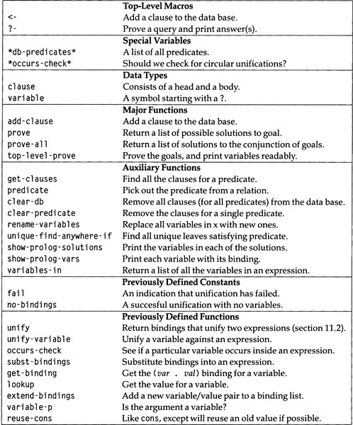

|
paip-ru
1
|
Не стоит знать язык, который не влияет на ваше представление о программировании.
-Alan Perlis
Lisp-это основной язык для работы с ИИ, но он ни в коем случае не единственный. Другой сильный соперник-Пролог, название которого происходит от "программирование основанное на логике". 1 идея логического программирования заключается в том, что программист должен сформулировать отношения, описывающие проблему и ее решение. Эти отношения действуют как ограничения на алгоритмы, которые могут решить проблему, но сама система, а не программист, отвечает за детали алгоритма. Напряженность между "программированием" и "логикой" будет рассмотрена в главе 14, но пока можно с уверенностью сказать, что пролог является приближением к идеальной цели логического программирования. Пролог занял удобную нишу между традиционным языком программирования и языком логических спецификаций. Он опирается на три важные идеи:
Эта глава служит двум целям: она предупреждает читателя о возможности написания определенных программ на Prolog, а не на Lisp, и представляет реализации трех важных идей Prolog, чтобы их можно было использовать (независимо или вместе) в программах на Lisp. Пролог представляет собой интересный, иной взгляд на процесс программирования. По этой причине это стоит знать. В следующих главах мы увидим несколько полезных приложений подхода Пролога.
Первая важная идея Пролога должна быть знакома читателям этой книги: манипулирование хранимой базой данных утверждений. В Прологе утверждения называются предложениями(clauses), и их можно разделить на два типа: факты(facts), которые устанавливают отношения, которые имеют место между некоторыми объектами, и правила(rules), которые используются для утверждения случайных фактов. Вот изображения двух фактов о населении Сан-Франциско и столицы Калифорнии. Отношениями являются "население" и "столица", а объектами, которые участвуют в этих отношениях, являются SF, 750000, Sacramento и CA:
Мы используем синтаксис Лиспа, потому что нам нужен интерпретатор Пролога, который можно встроить в Лисп. Реальная нотация Пролога будет population (sf, 750000). Вот несколько фактов, касающихся отношения likes(любит):
Эти факты можно истолковать как означающие, что Ким нравится Робин, Сэнди нравятся и Ли, и Ким, а Робин любит кошек. Нам нужен какой-то способ сообщить Лиспу, что они должны интерпретироваться как факты Пролога, а не как вызов функции Лисп. Мы будем использовать макрос <-, чтобы отмечать факты. Думайте об этом как о стрелке назначения/присваивания, которая добавляет факт в базу данных:
Одно из основных различий между Prolog и Lisp зависит от разницы между отношениями и функциями. В Лиспе мы бы определили функцию любит, чтобы (любит 'Sandy) возвращал список (Lee Kim). Если бы мы хотели получить доступ к информации другим способом, мы бы определили другую функцию, скажем, likers-of, чтобы (likers-of 'Lee) возвращал (Sandy). В Прологе у нас есть одно отношение likes вместо нескольких функций. Это единственное отношение можно использовать, как если бы оно было множеством функций, создавая разные запросы. Например, запрос (likes Sandy ?who) удовлетворяется с помощью ?who, привязанному к Lee или Kim, а запрос (like ?whoLee) удовлетворяется с?Whoпривязанному кSandy`.
Второй тип предложения в базе данных Пролога - это правило. Правила устанавливают условные факты. Например, мы можем представить правило, согласно которому Сэнди любит всех, кто любит кошек, следующим образом:
Это можно прочесть двояко. Рассматриваемое как логическое утверждение, оно читается: "Для любого x Сэнди любит x, если x любит кошек". Это декларативная интерпретация. Рассматриваемое как часть программы на Прологе, оно читается так: "Если вы когда-нибудь захотите показать, что Сэнди нравится какой-то x, один из способов сделать это - показать, что x любит кошекА". Это процедурная интерпретация. Она называется интерпретацией обратной цепочки, потому что человек рассуждает в обратном направлении от цели (Сэнди любит x) к предпосылкам (x любит кошек). Символ <- подходит для обеих интерпретаций: это стрелка, указывающая на логический смысл, и она указывает назад, чтобы указать обратную цепочку.
Декларативная форма может дать более одной процедурной интерпретации. (Мы сделали это в главе 1, где правила грамматики использовались для генерации как строк слов, так и деревьев синтаксического анализа.) Приведенное выше правило могло быть интерпретировано процедурно как "Если вы когда-нибудь обнаружите, что какой-то `x` любит кошек, значит, Сэнди любит `x` ". Это будет прямая цепочка: рассуждение от предпосылки к выводу. Оказывается, Пролог выполняет исключительно обратную цепочку. Многие экспертные системы используют исключительно прямую цепочку, а некоторые системы используют их сочетание.
Крайнее левое выражение в предложении называется заголовком, а остальные - телом. В этом представлении факт - это просто правило, не имеющее тела; то есть факт верен, несмотря ни на что. В общем, формулировка предложения следующая:
(<- head body...)
В предложении утверждается, что голова верна только в том случае, если все цели в теле верны. Например, в следующем пункте говорится, что Ким нравятся все, кому нравятся и Ли, и Ким:
Это можно читать так:
For any x, deduce thatKim likes x(Для любого x, вывести, что Ким любит x)
if it can be proved thatx likes Lee*and* x likes Kim. (если можно доказать, что x любит Ли и x любит Ким.)
Унификация - это прямое расширение идеи сопоставления с образцом. Функции сопоставления с образцом, которые мы видели до сих пор, всегда сопоставляли образец (выражение, содержащее переменные) с постоянным выражением (без переменных). При унификации два образца(шаблона), каждый из которых может содержать переменные, сопоставляются друг с другом. Вот пример разницы между сопоставлением с образцом и объединением:
`> (pat-match '(?x + ?y) '(2 + 1))=>((?Y . 1) (?X . 2))`
`> (unify '(?x + 1) '(2 + ?y))=>((?Y . 1) (?X . 2))`
В рамках унификации переменные (например, ?x и ?y выше) называются логическими переменными. Как и обычным переменным, логической переменной может быть присвоено значение или она может быть несвязанной. Разница в том, что логическая переменная никогда не может быть изменена. Как только ей присвоено значение, она сохраняет это значение. Любая попытка унифицировать его с другим значением приводит к неудаче. Можно объединить(унифицировать) переменную с одним и тем же значением более одного раза, точно так же, как можно было выполнить сопоставление с образцом (?x + ?x) с (2 + 2).
Разница между простым сопоставлением с образцом и унификацией заключается в том, что унификация позволяет сравнивать/сопоставлять две переменные друг с другом. Две переменные останутся несвязанными, но становятся эквивалентными. Если какая-либо переменная впоследствии связывается со значением, то обе переменные принимают это значение. В следующем примере переменные ?x и ?y сравниваются путем привязки ?x к ?y:
`> (unify '(f ?x) '(f ?y))=>((?X . ?Y))`
Унификацию(Объединение) можно использовать для сложных рассуждений. Например, если у нас есть два уравнения, a + a = 0 и x + y = y и если мы знаем, что эти два уравнения объединяются(унифицируются), то мы можем заключить, что a, x и y равны 0. Версия unify, которую мы определим, показывает этот результат путем привязки ?y к 0,?x к ?y и ?a к ?x. Мы также определим функцию unifier, которая показывает структуру, полученную в результате объединения(унификации) двух структур.
`> (unify '(?a + ?a = 0) '(?x + ?y = ?y))`=>
`> (unifier '(?a + ?a = 0) '(?x + ?y = ?y))=>(0 + 0 = 0)`
Чтобы не увлечься силой унификации(объединения), рекомендуется проанализировать, что именно дает унификация. Она действительно предоставляет способ заявить, что переменные равны другим переменным или выражениям. Она не обеспечивает способ автоматического решения уравнений или применения ограничений, отличных от равенства. Следующий пример проясняет, что при унификации символ + рассматривается только как неинтерпретированный атом, а не как оператор сложения:
`> (unifier '(?a + ?a = 2) '(?x + ?y = ?y))=>(2 + 2 = 2)`
Перед разработкой кода для unify, мы повторяем здесь код, взятый из утилиты сопоставления с образцом (глава 6):
Далее следует функция unify; она идентична pat-match (как определено на стр. 180), за исключением добавления строки, отмеченной ***. Функция unify-variable также следует за функцией match-variable:
К сожалению, это определение не совсем верное. Оно обрабатывает простые примеры:
`> (unify '(?x + 1) '(2 + ?y))=>((?Y . 1) (?X . 2))`
`> (unify '?x '?y)=>((?X . ?Y))`
`> (unify '(?x ?x) '(?y ?y))=>((?Y . ?Y) (?X . ?Y))`
но есть несколько патологических случаев, с которыми оно не может бороться:
While in the function GET-BINDING<= UNIFY-VARIABLE<= UNIFY
Проблема здесь в том, что как только ?y привязывается к самому себе, вызов unify внутри unify-variable приводит к бесконечному циклу. Но сопоставление ?y с самим собой всегда должно быть успешным, поэтому мы можем переместить проверку равенства в unify перед проверкой переменной. Это предполагает, что равные переменные - это eql, допустимое предположение для переменных, реализованных как символы (но будьте осторожны, если вы когда-нибудь решите реализовать переменные каким-либо другим способом).
Вот несколько тестов:
`> (unify '(?x ?x) '(?y ?y))=>((?X . ?Y))`
`> (unify '(?x ?x ?x) '(?y ?y ?y))=>((?X . ?Y))`
`> (unify '(?x ?y) '(?y ?x))=>((?Y . ?X) (?X . ?Y))`
While in the function GET-BINDING<= UNIFY-VARIABLE<= UNIFY
Мы отодвинули проблему, но не решили ее. Разрешить и (?y . ?y), и (?x . ?y) в одном списке привязки так же плохо, как разрешить (?y . ?y). Чтобы избежать этой проблемы, политика не должна иметь дело с привязанными переменными, а должна иметь дело с их значениями, как указано в списке привязки. Функция unify-variable не может реализовать эту политику. У неё есть проверка, которая получает привязку для var, когда это связанная переменная, но также должна быть проверка, которая получает значение x, когдаx является связанной переменной:
Вот еще несколько тестовых примеров:
`> (unify '(?x ?y) '(?y ?x))=>((?X . ?Y))`
`> (unify '(?x ?y a) '(?y ?x ?x))=>((?Y . A) (?X . ?Y))`
Вроде проблема решена. Теперь попробуем новую задачу:
`> (unify '?x '(f ?x))=>((?X F ?X))`
Здесь ((?X F ?X)) действительно означает ((?X . ((F ?X)))), поэтому ?X связан с (F ?X). Это представляет собой круговое, бесконечное унифицирование/объединение. Некоторые версии Пролога, особенно Пролог II (Giannesini et al. 1986), предоставляют интерпретацию таких структур, но определить семантику бесконечных структур сложно.
Самый простой способ справиться с такими бесконечными структурами - просто запретить их. Этот запрет может быть реализован путем модификации унификатора(unifier) так, чтобы он терпел неудачу при каждой попытке унифицировать переменную со структурой, содержащей эту переменную. Это известно в кругах унификации как *(проверка происхождения/occurs check).* На практике проблема возникает редко, и, поскольку она может добавить много вычислительной сложности, большинство систем Prolog проигнорировали проверку происхождения. Это означает, что эти системы потенциально могут давать неверные ответы. В последней версии unify предоставляется переменная, позволяющая пользователю включать или отключать проверку происхождения.
Теперь мы рассмотрим, как будет использоваться unify. В частности, нам нужна функция для замены(подстановки) списка привязки в выражение. Первоначально мы выбрали списки ассоциаций в качестве реализации привязок из-за доступности функции sublis. По иронии судьбы, sublis больше не будет работать, потому что переменные могут быть привязаны к другим переменным, которые, в свою очередь, привязаны к выражениям. Функция subst-bindings действует как sublis, за исключением того, что заменяет рекурсивные привязки.
Теперь давайте попробуем unify на нескольких примерах:
`> (unify '(?x ?y a) '(?y ?x ?x))=>((?Y . A) (?X . ?Y))`
`> (unify '?x '(f ?x))=>NIL`
`> (unify '(?x ?y) '((f ?y) (f ?x)))=>NIL`
`> (unify '(?x ?y ?z) '((?y ?z) (?x ?z) (?x ?y)))=>NIL`
> (unify 'a 'a)=> ((T . T))
Наконец, функция unifier вызывает unify и подставляет полученный список привязки в один из аргументов. Выбор x произвольный; такой же результат будет при подстановке списка привязки на y.
Вот несколько примеров unifier:
`> (unifier '(?x ?y a) '(?y ?x ?x))=>(A A A)`
` '(?z + (4 * 5) + 3))`=>
Когда *occurs-check(проверка происхождени)* это false, мы получаем следующие ответы:
`> (unify '?x '(f ?x))=>((?X F ?X))`
`> (unify '(?x ?y) '((f ?y) (f ?x)))=>((?Y F ?X) (?X F ?Y))`
В предложениях Пролога замечательно то, что их можно использовать для выражения отношений, которые мы обычно воспринимаем как "программы", а не как "данные". Например, мы можем определить отношение "member(участник/член)", которое имеет место между элементом и списком, содержащим этот элемент. Точнее, элемент является членом списка, если он является либо первым элементом списка(first), либо членом остальной части списка(member rest). Это определение можно почти дословно перевести на Пролог:
Конечно, мы можем написать подобное определение на Лиспе. Наиболее заметное различие заключается в том, что Prolog позволяет нам помещать шаблоны в заголовок предложения, поэтому нам не нужны распознаватели, такие как consp или аксессоры, такие как first и rest. В остальном определение Лиспа аналогично: 2
Если бы мы написали код Пролога, не используя возможности работы с образцом, он был бы больше похож на версию Лиспа:
Если мы определим или в Прологе, мы напишем версию, которая явно является синтаксическим вариантом версии Лиспа.
Давайте посмотрим, как работает версия member на языке Prolog. Представьте, что у нас есть интерпретатор Пролога, которому можно задать запрос с помощью макроса ?-, и что было введено определение member. Тогда мы увидим:
Ответ на первый вопрос - "да", потому что 2 является членом остальной части списка. Во втором запросе дважды ответ "да", потому что 2 появляется в списке дважды. Это немного удивительно для программистов на Лиспе, но все еще кажется довольно близкое соответствие между member Пролога и Lisp. Однако есть вещи, которые member Пролога может делать, а Lisp не может:
Здесь member используется не как предикат, а как генератор элементов в списке. В то время как функции Lisp всегда сопоставляются с заданным входом (или входами) с заданным выходом, отношения Пролога могут использоваться несколькими способами. Для member мы видим, что первый аргумент, ?x, может быть либо входом, либо выходом, в зависимости от указанной цели. Эта возможность использовать одну спецификацию как функцию, работающую в нескольких разных направлениях, является очень гибкой функцией Prolog. (К сожалению, хотя она очень хорошо работает для простых отношений, таких как member, на практике она не работает для больших программ. Например, очень сложно разработать компилятор и автоматически заставить его работать как дизассемблер.)
Теперь перейдем к реализации интерпретатора Пролога, как показано на рис. 11.1. Первый вариант реализации - это представление правил и фактов. Мы построим единую базу данных предложений, не отделяя правила от фактов. Простейшее представление предложений - это cons-ячейка, содержащая голову и тело. Для фактов тело будет пустым.
| []() |
|---|

|
| Рисунок 11.1: Глоссарий интерпретатора Пролога |
(ed: this should be a markdown table)
Следующий вопрос - как проиндексировать предложения. Вспомните процедурную интерпретацию предложения: когда мы хотим доказать голову, мы можем сделать это, доказав тело. Это говорит о том, что предложения следует индексировать по их заголовкам. Каждое предложение будет хранить в списке свойств предиката заголовк предложения. Поскольку база данных теперь распределена по списку свойств различных символов, мы представляем всю базу данных как список символов, хранящихся как значение *db-predicates*.
Теперь нам нужен способ добавления нового предложения. Работа разделена на макрос <-, который обеспечивает пользовательский интерфейс, и функцию add-clause, которая выполняет эту работу. Стоит определить макрос для добавления предложений, потому что фактически мы определяем новый язык: Prolog-In-Lisp. В этом языке есть только две синтаксические конструкции: макрос <- для добавления предложений и макрос ?- для выполнения запросов.
Теперь все, что нам нужно, - это способ удалить предложения, и база данных будет полной.
База данных бесполезна без способа извлечения данных, а также их размещения. Функция prove будет использоваться, чтобы доказать, что данная цель либо соответствует факту, который находится в базе данных напрямую, либо может быть получена из правил. Чтобы доказать цель, сначала найдите все предложения-кандидаты для этой цели. Для каждого кандидата проверьте, совпадает ли цель с заголовком предложения. Если это так, постарайтесь доказать все цели в теле предложения. Для фактов, в теле не будет целей, поэтому успех будет немедленным(непосредственным). Для правил, цели в теле нужно подтверждать по одной, следя за тем, чтобы привязки из предыдущего шага сохранялись. Реализация проста:
Сложность состоит в том, что нам нужен способ отличить переменную ?x в одном предложении от другой переменной ?x в другом предложении. В противном случае переменная, используемая в двух разных предложениях в ходе доказательства, должна была бы принимать одно и то же значение в каждом предложении, что было бы ошибкой. Так же, как аргументы функции могут иметь разные значения при разных рекурсивных вызовах функции, переменные в предложении могут принимать разные значения в разных рекурсивных применениях. Самый простой способ сохранить различия между переменными - просто переименовать все переменные в каждом предложении перед его использованием. Функция rename-variables делает следующее: 3
rename-variables использует функцию gensym, которая генерирует новый символ при каждом вызове. Этот символ не интернирован ни в одном пакете, что означает, что нет опасности, что программист напечатает символ с тем же именем. Здесь определены предикат variables-in и его вспомогательная функция:
Наконец, нам нужен хороший интерфейс для функций доказательства. Мы будем использовать ?- в качестве макроса для ввода запроса. С таким же успехом запрос может допускать сочетание целей, поэтому ?- вызовет prove-all(доказывать все). Вместе <- и ?- определяют полный синтаксис нашего языка Prolog-In-Lisp.
Теперь мы можем ввести все предложения, приведенные в предыдущем примере:
Чтобы спросить, кого любит Сэнди, мы воспользуемся:
Возможно вы удивитесь, но существует шесть ответов. Первые два ответа - Ли и Ким, потому что факты. Следующие три проистекают из предложения, что Сэнди любит всех, кто любит кошек. Во-первых, Робин - это ответ, потому что Робин любит кошек. Чтобы увидеть, что Робин является ответом, мы должны распутать привязки: ?who привязан к ?x2856, который, в свою очередь, привязан к Robin.
Теперь нас ждут некоторые сюрпризы: Сэнди внесена в список по следующим причинам: (1) Сэнди любит всех/тех, кто любит кошек, (2) кошки любят кошек, потому что все любят себя, (3) поэтому Сэнди любит кошек, и (4) поэтому Сэнди нравится Сэнди. Кошки - это ответ из-за шага (2), и, наконец, Сэнди - это снова ответ из-за пункта о симпатии к себе. Обратите внимание, что результатом запроса является список решений, где каждое решение соответствует разному способу подтверждения истинности запроса. Сэнди появляется дважды, потому что есть два разных способа показать, что Сэнди нравится Сэнди. Порядок появления решений определяется порядком поиска. Prolog ищет решения сверху вниз, слева направо. Поиск по предложениям выполняется сверху вниз, поэтому первые введенные предложения являются первыми опробованными. В конкретном предложении поиск выполняется слева направо. При использовании предложения (likes Kim ?x) Prolog сначала пытается найти x, которому нравится Ли, а затем посмотреть, нравится ли x Ким.
Результат от prove-all не очень красивый. Мы можем исправить это, определив новую функцию top-level-prove, которая, как и раньше, вызывает prove-all, но затем передает список решений в show-prolog-solutions, которая распечатывает их в более читаемом виде. Обратите внимание, что show-prolog-solutions не возвращает значений: (values). Это означает, что цикл read-eval-print не будет печатать ничего, если (values) является результатом вызова верхнего уровня.
Теперь попробуем несколько запросов:
Первый вопрос снова спрашивает, кому нравится Сэнди, а второй спрашивает, кому нравится Сэнди. Третий просит подтверждения факта. Ответ - "no", потому что нет никаких предложений или фактов, говорящих о том, что Робин любит Ли. Вот еще один пример - список пар людей, которые находятся в отношениях взаимных симпатий. Последний ответ содержит неустановленную переменную, указывающую на то, что все любят себя.
В Прологе имеет смысл задавать открытые(open-ended) запросы, такие как "what lists is 2 a member of ?"(в какие списки входит ?) или даже "what items are elements of what lists?"(какие элементы входят в какие списки?)
Эти запросы являются действительным Прологом и вернут решения, но их будет бесконечное количество. Поскольку наш интерпретатор собирает все решения в один список перед тем, как показать какое-либо из них, мы никогда не увидим решения. В следующем разделе показано, как написать новый интерпретатор, решающий эту проблему.
** Упражнение 11.1 [m] ** Отношения представляются списком, первым элементом которого является символ. Однако для отношений без аргументов некоторые люди предпочитают писать (<- p q r), а не (<- (p) (q) (r)). Внесите изменения, чтобы любая форма была приемлемой.
** Упражнение 11.2 [m] ** Некоторым людям трудно читать обозначение <-. Определите макросы rule и fact, чтобы мы могли написать:
Интерпретатор Пролога, реализованный в последнем разделе, решает проблемы, возвращая список всех возможных решений. Мы будем называть этот подход batch(пакетным), потому что ответы извлекаются за один непрерывный пакет обработки. Иногда это именно то, что вам нужно, но в других случаях достаточно одного решения. В реальном Прологе решения представляются по одному по мере их нахождения. После того, как каждое решение напечатано, пользователь может запросить дополнительные решения или остановиться. Это "инкрементный" подход. Постепенный подход будет быстрее, если желаемое решение будет одним из первых из многих альтернатив. Пошаговый подход будет работать даже при бесконечном количестве решений. А если этого недостаточно, можно реализовать инкрементный подход, при котором поиск будет выполняться сначала в глубину. Это означает, что в любой момент для этого потребуется меньше места для хранения, чем при пакетном подходе, при котором все решения должны одновременно храниться в памяти.
Один из подходов - изменить интерпретатор последнего раздела для использования каналов(pipes), а не списков. С каналами ненужные вычисления задерживаются, и даже бесконечные списки могут быть выражены за конечное количество времени и пространства. Мы могли бы перейти на каналы, просто изменив mapcan в prove и prove-all на mappend-pipe (стр. 286). В книгах Winston and Horn (1988) и Abelson and Sussman (1985) используется этот подход. Мы возьмем другой подход.
Первый шаг - это варианты prove и prove-all, которые возвращают единственное решение, а не список всех возможных решений. Это должно напоминать achieve и achieve-all из "gps" (глава 4). В отличие от gps, рекурсивные подцели и достигнутые родственные цели не проверяются. Однако для систематического поиска по всем решениям требуется prove, поэтому ей передается дополнительный параметр: список других целей, которых нужно достичь после достижения первой цели. Это эквивалентно передаче продолжения в prove. В результате, если prove когда-либо будет успешно, это означает, что вся цель верхнего уровня достигнута. Если это не удается, это просто означает, что программа возвращается и пытается выполнить другую последовательность вариантов. Обратите внимание, что prove полагается на то, что fail равно nil, потому что она использует some.
Если prove действительно успешно, это означает, что решение было найдено. Если мы хотим больше решений, нам нужен какой-то способ сделать процесс неудачным, чтобы он вернулся(откатился назад) и попробовал снова. Один из способов сделать это - расширить каждый запрос с целью распечатать переменные и спросить пользователя, следует ли продолжить вычисление. Если пользователь говорит "yes/да", то цель терпит неудачу и начинается возврат. Если пользователь говорит "no/нет", цель выполняется, а поскольку это конечная цель, вычисление завершается. Для этого требуется совершенно новый тип цели: цель, которая не сопоставляется с базой данных, а скорее заставляет некоторую процедуру предпринимать действия. В Прологе такие процедуры называются примитивами, потому что они встроены в язык, а новые не могут быть определены пользователем. Пользователь, конечно, может определять непримитивные процедуры, которые вызывают примитивы.
В нашей реализации примитивы будут представлены как функции Лиспа. Предикат может быть представлен либо как список предложений (как это было до сих пор), либо как единичный примитив. Вот версия verify, которая при необходимости вызывает примитивы:
Вот версия top-level-prove, которая добавляет примитивную цель show-prolog-vars в конец списка целей. Обратите внимание, что эта версия не должна вызывать саму show-prolog-solutions, так как печать будет обрабатываться примитивом для show-prolog-vars
Здесь мы определяем примитивный show-prolog-vars. Все примитивы должны быть функциями трех аргументов: списка аргументов отношения примитивов (здесь список переменных для отображения), списка привязки для этих аргументов и списка ожидающих целей. Примитив должен либо вернуть fail, либо вызвать prove-all для продолжения.
Поскольку примитивы представлены в виде записей в свойстве предикатных символов clauses, мы должны зарегистрировать show-prolog-vars как примитив, подобный этому:
Наконец, предикат Лиспа continue-p спрашивает пользователя, хочет ли он увидеть больше решений:
(#\. nil)
Эта версия работает так же хорошо, как и предыдущая, с конечными задачами. Единственное отличие состоит в том, что точки с запятой вводит пользователь, а не система. Преимущество состоит в том, что теперь мы можем использовать систему и для решения бесконечных задач. Сначала мы спросим, в какие списки входит 2:
Ответы означают, что 2 является членом любого списка, который начинается с 2, или чей второй элемент равен 2, или чей третий элемент равен 2, и так далее. Бесконечное вычисление было остановлено, когда пользователь ввел точку, а не точку с запятой. Ответ "no"(нет) означает, что больше нет ответов для печати; он появится, если ответов нет вообще, если пользователь вводит точку или если все ответы были напечатаны.
Мы можем задавать и более абстрактные вопросы. Ответ на следующий запрос говорит, что элемент является элементом списка, когда он является первым элементом, или вторым, или третьим, или четвертым, и так далее.
Теперь добавим определение отношение длины(length):
Вот несколько запросов, показывающих, что длина(length) может использоваться для поиска второго аргумента, первого или обоих:
Следующие два запроса показывают два списка длины два с a в качестве члена. Оба запроса дают правильный ответ - список из двух элементов, который начинается или заканчивается на a. Однако поведение после создания этих двух решений совершенно разное.
В первом запросе length генерирует только одно возможное решение - список с двумя несвязанными элементами. member берет это решение и создает экземпляр первого или второго элемента a.
Во втором запросе member продолжает генерировать потенциальные решения. Первые два частичных решения, где a - первый или второй член списка неизвестной длины, расширяются на length, чтобы получить решения, у которых список имеет длину два. После этого member генерирует все более длинные списки, которые length отвергает. В определении элемента неявно подразумевается, что последующие решения будут длиннее, но поскольку это явно не известно, все они все равно генерируются, а затем явно проверяются и отклоняются с помощью параметра length.
Этот пример показывает ограничения Prolog как чистого языка логического программирования. Оказывается, пользователь должен заботиться не только о логике проблемы, но и о потоке управления. Prolog достаточно умен, чтобы возвращаться и находить все решения, когда пространство поиска достаточно мало, но когда оно бесконечно (или даже очень велико), программист по-прежнему несет ответственность за управление потоком управления. Можно разработать языки, которые делают гораздо больше с точки зрения автоматического потока управления. 4 Пролог - это удобный и эффективный промежуточный вариант между императивными языками и чистой логикой.
Предположим, вас просят внести "небольшое" изменение в существующую программу. Проблема в том, что некоторая функция f, которая считалась однозначной(возвращающей одно значение), как теперь стало известно, при определенных обстоятельствах возвращает два или более правильных ответа. Другими словами, f недетерминирована. (Возможно, f это sqrt, и теперь мы хотим иметь дело с отрицательными числами). Какие у вас есть альтернативы как программиста? Можно выделить пять возможностей:
Последняя альтернатива наиболее желательна. Она эффективна, потому что не требует вычисления ответов, которые никогда не используются. Она ненавязчива, поскольку не требует изменения вызывающей функции (и вызывающей функции вызывающей функции) для ожидания списка или канала(pipe) для ответов. К сожалению, у него есть одна серьезная трудность: должен быть способ упаковать текущее состояние вычисления и сохранить его, чтобы его можно было вернуть, когда первый вариант не сработает. Для нашего интерпретатора Пролога текущее состояние кратко представлено в виде списка целей. В других задачах не так-то просто подвести итоги всего состояния.
В разделе 22.4 мы увидим, что диалект Scheme в Lisp предоставляет функцию call-with-current-continuation, которая делает именно то, что мы хотим: она упаковывает текущее состояние вычислений в функцию, которую можно сохранить и вызывать позже. К сожалению, в Common Lisp нет соответствующей функции.
Прежде чем двигаться дальше, полезно ввести понятие анонимной переменной. Это переменная, которая отличается от всех других в предложении или запросе, но программист не хочет давать ей имя. В реальном Прологе нижнее подчеркивание используется для анонимных переменных, но мы будем использовать одиночный знак вопроса. В последующем определении member используются анонимные переменные для обозначения позиций внутри терминов, которые не нужны в предложении:
(<- (member ?item (? . ?rest)) (member ?item ?rest))
Однако мы также хотим разрешить несколько анонимных переменных в предложении, но при этом иметь возможность сохранять каждую анонимную переменную отдельно от всех других переменных. Один из способов сделать это - заменить каждую анонимную переменную уникальной переменной. Функция replace-?-vars использует для этого gensym. Она устанавливается в макросы верхнего уровня <- и ?-, чтобы все предложения и запросы обрабатывались должным образом.
Именованная переменная, которая используется в предложении только один раз, также может считаться анонимной переменной. Это решается другим способом в раздел 12.3.
Вот пример того, в чем Prolog очень хорош: логическая головоломка. В головоломке есть пятнадцать фактов или ограничений:
Необходимо ответить на следующие вопросы: who drinks water and who owns the zebra?(кто пьет воду и кому принадлежит зебра?) Чтобы решить эту загадку, мы сначала определяем отношения nextto (для "рядом с" - "next to") и iright (для "непосредственно справа от" - "immediately to the right of"). Они тесно связаны с отношением member, которое здесь повторяется.
(<- (member ?item (?item . ?rest)))
(<- (member ?item (?x . ? rest)) (member ?item ?rest))
(<- (nextto ?x ?y ?list) (iright ?x ?y ?list))
(<- (nextto ?x ?y ?list) (iright ?y ?x ?list))
(<- (iright ?left ?right (?left ?right . ?rest)))
(<- (iright ?left ?right (?x . ?rest))
(<- (= ?x ?x))
Мы также определили отношение тождества =. В нем есть одно предложение, в котором говорится, что любой x равен самому себе. Можно подумать, что это реализует eq или equal. Фактически, поскольку Пролог использует унификацию, чтобы увидеть, объединяются/унифицируются ли каждый из двух аргументов цели с помощью ?x, это означает, что = является унификацией/объединением.
Теперь мы готовы определить головоломку "зебра" с помощью одного (длинного) предложения. Переменная "?h" представляет список из пяти домов, и каждый дом представлен термином в форме (house nationality pet cigarette drink color)-(дом национальность питомец сигарета напиток цвепт). Переменная ?w - пьющий воду, а ?z - владелец зебры. Каждое из 15 ограничений в головоломке перечислено в теле зебры, хотя ограничения 9 и 10 были объединены в первое(одно). Рассмотрим ограничение 2: "The Englishman lives in the `red` house."(Англичанин живет в красном доме). Оно интерпретируется как "есть дом, национальность которого - англичанин, цвет - красный, и который входит в список домов": другими словами, (member (house englishman ? ? ? red) ?h). Остальные ограничения также просты.
Вот вопрос и решение загадки:
Это заняло 278 секунд, а профилирование (см. Стр. 288) показывает, что функция proof вызывалась 12825 раз. Вызов prove(доказательства) был назван логическим выводом, поэтому наша система выполняет 12825/278 = 46 логических выводов в секунду, или LIPS. Хорошие системы Prolog работают со скоростью от 10 000 до 100 000 LIPS или более, так что эта едва ли не прихрамывает.
Небольшие изменения в проблеме могут сильно повлиять на время поиска. Например, отношение nextto выполняется, когда первый дом находится непосредственно справа от второго или когда второй находится непосредственно справа от первого. Порядок перечисления этих пунктов произвольный, и можно подумать, что не имеет значения, в каком порядке они перечислены. Фактически, если мы изменим порядок этих двух предложений, время выполнения сократится примерно вдвое.
Обратная цепочка с обратным отслеживанием в Prolog - мощный метод для генерации возможных решений проблемы. Это упрощает реализацию стратегии создать и тестировать(проверить), при которой возможные решения рассматриваются по одному, а когда решение-кандидат отклоняется, предлагается следующее. Но создание и тестирование возможно только тогда, когда пространство возможных решений невелико.
В головоломке с зеброй для каждого из пяти домов есть пять атрибутов. Таким образом, существует 5!5 или более 24 миллиардов возможных решений, слишком много, чтобы тестировать по одному. Именно концепция унификации (с соответствующим понятием логической переменной) делает возможным создание и тестирование этой головоломки. Вместо того, чтобы перечислять полные варианты решений, унификация позволяет нам указать частичные кандидаты. Мы начинаем с того, что узнаём, что есть пять домов, где норвежец живет слева, а пьющий молоко посередине. Вместо того, чтобы генерировать всех полных кандидатов, удовлетворяющих этим двум ограничениям, мы оставляем оставшуюся информацию неопределенной, объединяя оставшиеся дома и атрибуты с анонимными логическими переменными. Следующее ограничение (номер 2) помещает англичанина в красный дом. Из-за того, как написано member, сначала пытается поместить англичанина в крайний левый дом. Это отклоняется, потому что англичанин и норвежец не могут объединиться(унифицироваться/unify), поэтому рассматривается следующая возможность, и англичанин помещается во второй дом. Но никакие другие особенности второго дома не указаны - нам не нужно было делать отдельные предположения о том, что дом англичанина зеленый, желтый и так далее. Поиск продолжается, заполняя ровно столько, сколько необходимо, и делая резервные копии всякий раз, когда объединение(унификация) не удается.
В этой проблеме унификация служит той же цели, что и макрос задержки(delay) (стр. 281). Это позволяет нам отложить определение значения некоторого атрибута как можно дольше, но немедленно отклонить решение, которое пытается присвоить два разных значения одному и тому же атрибуту. Таким образом, мы сэкономим время, если в конечном итоге возвращаемся до того, как вычисление будет выполнено, но мы все равно сможем заполнить значение позже.
Можно расширить унификацию, чтобы она выполняла больше работы, а при возврате выполнялось меньше работы. Рассмотрим следующее вычисление:
Первые две строки генерируют перестановки списка (d a c b), а третья строка проверяет перестановку, равную (a b c d). Большая часть работы выполняется путем возврата(backtracking). Альтернативой является расширение унификации для работы со списками, а также константами и переменными. Предикаты, такие как length и member, будут примитивами, которые должны знать о представлении списков. Затем в первых двух строках приведенной выше программы для set ?l будет указано что-то вроде #s (list :length 4 :members (d a c d)). Третья строка будет вызовом расширенной процедуры унификации, которая будет дополнительно определять ?l чем-то вроде:
Усложняя процедуру унификации, мы полностью устраняем необходимость в обратном отслеживании.
Упражнение 11.3 [s] Будет ли алгоритм унификации, который откладывает тесты "member", хорошей или плохой идеей для головоломки зебра?
Как мы видели в раздел 11.2, отслеживать список привязки переменных немного сложно. Кроме того, это может привести к неэффективности, если список привязок становится большим, потому что список должен просматриваться линейно, и потому что для хранения списка привязок необходимо выделить пространство. Альтернативная реализация - заменить unify на деструктивную операцию. В этом подходе нет списков привязок. Вместо этого каждая переменная представлена как структура, которая включает поле для ее привязки. Когда переменная объединяется(унифицируется) с другим выражением, поле привязки переменной изменяется, чтобы указывать на выражение. Такие переменные будут называться vars, чтобы отличать их от реализации переменных в виде символов, начинающихся с вопросительного знака, vars определяются следующим кодом:
Макрос deref достигает привязки переменной, возвращая ее аргумент, если это несвязанная(unbound) переменная или выражение без переменной. Он включает цикл, потому что переменная может быть привязана к другой переменной, которая, в свою очередь, привязана к конечному значению.
Обычно считается плохой практикой реализовать deref как макрос, поскольку он может быть реализован как встроенная функция, при условии, что вызывающий желает написать (setf x (deref x)) вместо (deref x). Однако deref будет появляться в коде, сгенерированном некоторыми версиями компилятора Prolog, который будет представлен в следующем разделе. Поэтому, чтобы сгенерированный код выглядел более аккуратно, я позволил себе роскошь макроса deref.
Функция unify! ниже является деструктивной версией unify. Это предикат, который возвращает истину в случае успеха и ложь в случае неудачи и имеет побочный эффект изменения привязок переменных.
(defun unify! (x y)
((var-p x) (set-binding! x y))
((var-p y) (set-binding! y x))
(and (unify! (first x) (first y))
(unify! (rest x) (rest y))))
(defun set-binding! (var value)
"Set var's binding to value.
Always succeeds (returns t)."
Чтобы упростить чтение vars, мы можем установить: print-function:
Это первый пример тщательно продуманной: print-function. Следует отметить три вещи. Во-первых, она явно записывает в поток, переданный в качестве аргумента. Она не записывает в поток по умолчанию. Во-вторых, она проверяет переменную depth на *print-level* и печатает только имя переменной при превышении глубины. В-третьих, она использует write для печати привязок. Это связано с тем, что write обращает внимание на текущие значения *print-escape*, *print-pretty* и soon. Другие функции печати, такие как prinl или print, не обращают внимания на эти переменные.
Теперь, для целей обратного отслеживания(backtracking), мы хотим, чтобы set-binding! отслеживал сделанные привязки, чтобы их можно было отменить позже:
(defun set-binding! (var value)
in the trail. Always returns t."
(defun undo-bindings! (old-trail)
Теперь нам нужен способ создания новых переменных, каждая из которых отличается. Это можно сделать, задав новое имя для каждой переменной, но более быстрое решение - просто увеличить счетчик. Функция конструктора ? определена для создания новой переменной с именем, которое является новым целым числом. Это не обязательно; мы могли бы просто использовать автоматически предоставленный конструктор make-var. Однако я думал, что операция предоставления новой анонимной переменной достаточно отличается от предоставления именованной переменной, что заслуживает своей собственной функции. Кроме того, make-var может быть менее эффективной, потому что она должна обрабатывать аргументы ключевого слова. Функция ? не имеет аргументов; она просто присваивает значения по умолчанию, указанные в слотах структуры var.
Следующим разумным шагом было бы использовать деструктивную унификацию для создания более эффективного интерпретатора. Однако это оставлено как упражнение, и вместо этого мы отложим интерпретатор и в следующей главе разработаем компилятор.
Как было сказано в начале этой главы, Prolog имеет многие из тех же функций, которые делают Lisp привлекательным для разработки программ. Так же, как легко написать интерпретатор Лиспа на Лиспе, так же легко написать интерпретатор Пролога на Прологе. Следующий метаинтерпретатор Пролога имеет три основных отношения. Предложение отношения используется для хранения предложений, которые составляют правила и факты, которые должны быть интерпретированы. Отношение prove(доказательство) используется для доказательства цели. Он вызывает prove-all, которая пытается доказать список целей, prove-all успешна двумя способами: (1) если список пуст, или (2) если есть какое-то предложение, head совпадает с первой целью, и, если мы сможем доказать телом этого предложения, следующие за ним оставшиеся цели:
Теперь мы добавляем в базу данных два предложения, чтобы определить отношение членства(member):
(<- (clause (<- (mem ?x (? . ?z)) (mem ?x ?z))))
Наконец, мы можем доказать цель с помощью нашего интерпретатора:
Многие из функциональных возможностей, которые делают Prolog успешным языком для ИИ (и для разработки программ в целом), такие же, как и возможности Lisp. Давайте пересмотрим список возможностей, которые отличают Lisp от обычных языков (см. Стр.25), и посмотрим, что может предложить Prolog:
call позволяет вызвать термин - часть данных - как цель. Хотя точки выбора с возвратом не являются объектами первого класса, их можно использовать способом, очень похожим на продолжения в Лиспе.Чтобы взглянуть на вещи в перспективе, примите во внимание, что Лисп является одновременно одним из языков самого высокого уровня и универсальным языком ассемблера. Это язык высокого уровня, потому что он может легко захватывать данные, функциональные и управляющие абстракции. Это хороший язык ассемблера, потому что можно писать на Lisp в стиле, который напрямую отражает операции, доступные на современных компьютерах.
Пролог, как правило, не так эффективен, как язык ассемблера, но может быть более кратким в качестве языка спецификации, по крайней мере, для некоторых проблем. Пользователь пишет спецификации: списки аксиом, которые описывают отношения, которые могут иметь место в проблемной области. Если эти спецификации имеют правильную форму, автоматический поиск с возвратом в Prolog может найти решение, даже если программист не предоставляет явного алгоритма. Для других проблем пространство поиска будет слишком большим или бесконечным, или простой поиск в глубину Prolog с возвратами будет слишком негибким. В этом случае Prolog следует использовать как язык программирования, а не как язык спецификации. Программист должен знать стратегию поиска Пролога, используя ее для реализации подходящего алгоритма для решения данной проблемы.
Пролог, как и Лисп, несправедливо пострадал от некоторых распространенных мифов. Считалось, что это неэффективный язык, потому что ранние реализации были интерпретируемыми, и потому что он использовался для написания интерпретаторов. Но современный скомпилированный Пролог может быть довольно эффективным (см. Warren et al. 1977 и Ван Рой 1990). Есть соблазн рассматривать Prolog как решение само по себе, а не как язык программирования. Те, кто придерживается этой точки зрения, возражают, что стратегия поиска в глубину Пролога и основа исчисления предикатов слишком негибкие. С этим возражением не согласны программисты Пролога, которые используют возможности, предоставляемые языком, для построения более мощных стратегий поиска и представлений, точно так же, как это можно было бы сделать в Лиспе или любом другом языке.
Cordell Green (1968) was the first to articulate the view that mathematical results on theorem proving could be used to make deductions and thereby answer queries. However, the major technique in use at the time, resolution theorem proving (see Robinson 1965), did not adequately constrain search, and thus was not practical. The idea of goal-directed computing was developed in Carl Hewitt's work (1971) on the planner language for robot problem solving. He suggested that the user provide explicit hints on how to control deduction.
At about the same time and independently, Alain Colmerauer was developing a system to perform natural language analysis. His approach was to weaken the logical language so that computationally complex statements (such as logical dis-junctions) could not be made. Colmerauer and his group implemented the first Prolog interpreter using Algol-W in the summer of 1972 (see Roussel 1975). It was Roussel's wife, Jacqueline, who came up with the name Prolog as an abbreviation for "programmation en logique." The first large Prolog program was their natural language system, also completed that year (Colmerauer et al. 1973). For those who read English better than French, Colmerauer (1985) presents an overview of Prolog. Robert Kowalski is generally considered the coinventer of Prolog. His 1974 article outlines his approach, and his 1988 article is a historical review on the early logic programming work.
There are now dozens of text books on Prolog. In my mind, six of these stand out. Clocksin and Mellish's Programming in Prolog (1987) was the first and remains one of the best. Sterling and Shapiro's The Art of Prolog (1986) has more substantial examples but is not as complete as a reference. An excellent overview from a slightly more mathematical perspective is Pereira and Shieber's Prolog and Natural-Language Analysis (1987). The book is worthwhile for its coverage of Prolog alone, and it also provides a good introduction to the use of logic programming for language under-standing (see part V for more on this subject). O'Keefe's The Craft of Prolog (1990) shows a number of advanced techniques. O'Keefe is certainly one of the most influential voices in the Prolog community. He has definite views on what makes for good and bad coding style and is not shy about sharing his opinions. The reader is warned that this book evolved from a set of notes on the Clocksin and Mellish book, and the lack of organization shows in places. However, it contains advanced material that can be found nowhere else. Another collection of notes that has been organized into a book is Coelho and Cotta's Prolog by Example. Published in 1988, this is an update of their 1980 book, How to Solve it in Prolog. The earlier book was an underground classic in the field, serving to educate a generation of Prolog programmers. Both versions include a wealth of examples, unfortunately with little documentation and many typos. Finally, Ivan Bratko's Prolog Programming for Artificial Intelligence (1990) covers some introductory AI material from the Prolog perspective.
Maier and Warren's Computing with Logic (1988) is the best reference for those interested in implementing Prolog. It starts with a simple interpreter for a variable-free version of Prolog, and then moves up to the full language, adding improvements to the interpreter along the way. (Note that the second author, David S. Warren of Stonybrook, is different from David H. D. Warren, formerly at Edinburgh and now at Bristol. Both are experts on Prolog.)
Lloyd's Foundations of Logic Programming (1987) provides a theoretical explanation of the formal semantics of Prolog and related languages. Lassez et al. (1988) and Knight (1989) provide overviews of unification.
There have been many attempts to extend Prolog to be closer to the ideal of Logic Programming. The language MU-Prolog and NU-Prolog (Naish 1986) and Prolog III (Colmerauer 1990) are particularly interesting. The latter includes a systematic treatment of the ≠ relation and an interpretation of infinite trees.
Exercise 11.4 [m] It is somewhat confusing to see "no" printed after one or more valid answers have appeared. Modify the program to print "no" only when there are no answers at all, and "no more" in other cases.
Exercise 11.5 [h] At least six books (Abelson and Sussman 1985, Charniak and McDermott 1985, Charniak et al. 1986, Hennessey 1989, Wilensky 1986, and Winston and Horn 1988) present unification algorithms with a common error. They all have problems unifying (?x ?y a) with (?y ?x ?x). Some of these texts assume that unifywill be called in a context where no variables are shared between the two arguments. However, they are still suspect to the bug, as the following example points out:
Despite this subtle bug, I highly recommend each of the books to the reader. It is interesting to compare different implementations of the same algorithm. It turns out there are more similarities than differences. This indicates two things: (1) there is a generally agreed-upon style for writing these functions, and (2) good programmers sometimes take advantage of opportunities to look at other's code.
The question is : Can you give an informal proof of the correctness of the algorithm presented in this chapter? Start by making a clear statement of the specification. Apply that to the other algorithms, and show where they go wrong. Then see if you can prove that the unify function in this chapter is correct. Failing a complete proof, can you at least prove that the algorithm will always terminate? See Norvig 1991 for more on this problem.
Exercise 11.6 [h] Since logic variables are so basic to Prolog, we would like them to be efficient. In most implementations, structures are not the best choice for small objects. Note that variables only have two slots: the name and the binding. The binding is crucial, but the name is only needed for printing and is arbitrary for most variables. This suggests an alternative implementation. Each variable will be a cons cell of the variable's binding and an arbitrary marker to indicate the type. This marker would be checked by variable-p. Variable names can be stored in a hash table that is cleared before each query. Implement this representation for variables and compare it to the structure representation.
Exercise 11.7 [m] Consider the following alternative implementation for anonymous variables: Leave the macros <- and ?- alone, so that anonymous variables are allowed in assertions and queries. Instead, change unify so that it lets anything match against an anonymous variable:
Is this alternative correct? If so, give an informal proof. If not, give a counterexample.
Exercise 11.8 [h] Write a version of the Prolog interpreter that uses destructive unification instead of binding lists.
Exercise 11.9 [m] Write Prolog rules to express the terms father, mother, son, daughter, and grand- versions of each of them. Also define parent, child, wife, husband, brother, sister, uncle, and aunt. You will need to decide which relations are primitive (stored in the Prolog data base) and which are derived by rules.
For example, here's a definition of grandfather that says that G is the grandfather of C if G is the father of some P, who is the parent of C:
Exercise 11.10 [m] The following problem is presented in Wirth 1976:
I married a widow (let's call her W) who has a grown-up daughter (call her D). My father (F), who visited us often, fell in love with my step-daughter and married her. Hence my father became my son-in-law and my step-daughter became my mother. Some months later, my wife gave birth to a son (S1), who became the brother-in-law of my father, as well as my uncle. The wife of my father, that is, my step-daughter, also had a son (S2).
Represent this situation using the predicates defined in the previous exercise, verify its conclusions, and prove that the narrator of this tale is his own grandfather.
Exercise 11.11 [d] Recall the example:
> (?- (length (a b c d) ?n))
It is possible to produce 4 instead of (1+ (1+ (1+ (1+ 0)))) by extending the notion of unification. Aït-Kaci et al. 1987 might give you some ideas how to do this.
Exercise 11.12 [h] The function rename-variables was necessary to avoid confusion between the variables in the first argument to unify and those in the second argument. An alternative is to change the unify so that it takes two binding lists, one for each argument, and keeps them separate. Implement this alternative.
Answer 11.9 We will choose as primitives the unary predicates male and female and the binary predicates child and married. The former takes the child first; the latter takes the husband first. Given these primitives, we can make the following definitions:
Note that there is no way in Prolog to express a true definition. We would like to say that "P is the parent of C if and only if C is the child of P," but Prolog makes us express the biconditional in one direction only.
Answer 11.10 Because we haven't considered step-relations in the prior definitions, we have to extend the notion of parent to include step-parents. The definitions have to be written very carefully to avoid infinite loops. The strategy is to structure the defined terms into a strict hierarchy: the four primitives are at the bottom, then parent is defined in terms of the primitives, then the other terms are defined in terms of parent and the primitives.
We also provide a definition for son-in-law:
Now we add the information from the story. Note that we only use the four primitives male, female, married, and child:
Now we are ready to make the queries:
1 Actually, programmation en logique, since it was invented by a French group (see page 382). !!!(p) {:.ftnote1}
2 Actually, this is more like the Lisp find than the Lisp member. In this chapter we have adopted the traditional Prolog definition of member. !!!(p) {:.ftnote1}
3 See exercise 11.12 for an alternative approach. !!!(p) {:.ftnote1}
4 See the MU-Prolog and NU-Prolog languages (Naish 1986). !!!(p) {:.ftnote1}
1.8.13